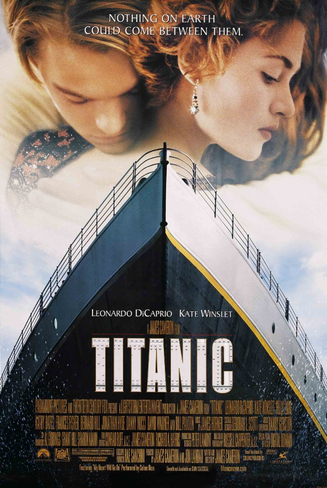
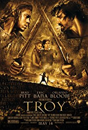

A seventeen-year-old aristocrat falls in love with a kind but poor artist aboard the luxurious, ill-fated R.M.S. Titanic. Director: James Cameron Writer: James Cameron Stars: Leonardo DiCaprio, Kate Winslet, Billy Zane | Titanic: Original Motion Picture Soundtrack - Collector's Anniversary Edition James Horner Showing all 124 wins and 79 nominations Academy Awards, USA 1998 Winner Oscar Best Picture James Cameron Jon Landau Best Director James Cameron Best Cinematography Russell Carpenter Best Art Direction-Set Decoration Peter Lamont (art director) Michael Ford (set decorator) Best Costume Design Deborah Lynn Scott Best Sound Gary Rydstrom Tom Johnson Gary Summers Mark Ulano Best Film Editing Conrad Buff IV James Cameron Richard A. Harris
An adaptation of Homer's great epic, the film follows the assault on Troy by the united Greek forces and chronicles the fates of the men involved. Director: Wolfgang Petersen Writers: Homer (poem), David Benioff (screenplay) Stars: Brad Pitt, Eric Bana, Orlando Bloom
 « Previous home »